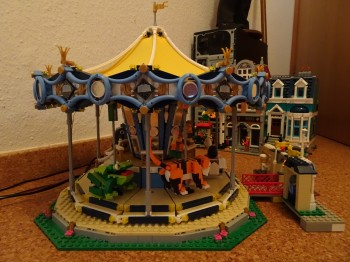
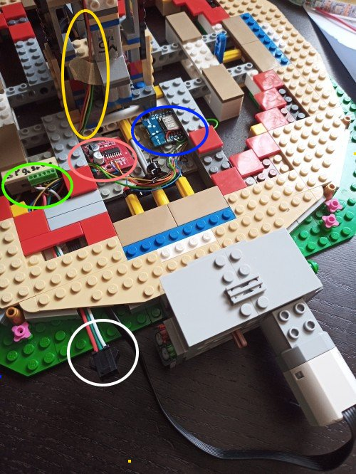
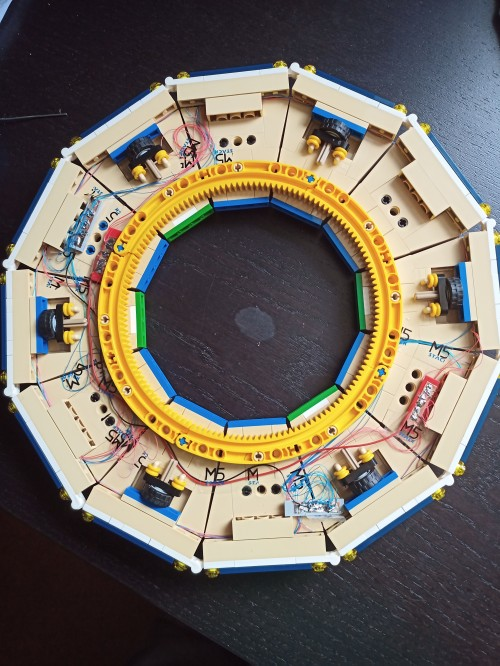
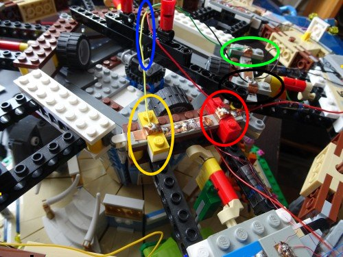

Das Karussell bedeutet schon eine etwas größere Herausforderung:
- motorischer Antrieb, 9V, gesteuert über ESP 8266 und Motorshield
- drehbares Oberteil, elektrische Verbindungen vom statischen Unterteil auf den drehbaren Teil
- in den drehbaren Teilen LED-Kränze und LED-Strips
- Programmieren der Abläufe: Ruhe, Start, Stopp
- dazu akkustische Untermalung


Fußteil des Karussells mit Steuerung
unten:
Kabel: Spannung 5V, 9V, GND (weiß)
dahinter Stromverteilung (grün)
Bildmitte:
Motorshield (rot) -- -- ESP8266 (blau)
darüber gehts dann weiter nach oben zu den Schleifringen (gelb)
Hier sieht man den beweglichen Teil des Karussels von unten
Die feine Kupferdrähte (rot und blau) führen jeweils zu den Kupferfolien
und sind dort angelötet.
Die kleinen SMD-LEDs klemmen unter den transparenten gelben Lego Plättchen.


Im oberen Teil des Karussells ist ziemlich viel zu verdrahten.
Von unten in der Mitte (natürlich in der Drehachse) kommen die Kabel aus dem beweglichen Teil des Schleifringmoduls. (Blaue Markierung)
Bei mir sind das: (mit passenden Farbmarkierungen)
schwarz - GND
rot - Spannung 5V (für rgb-Strip)
grün - Datenleitung rgb-Strip
gelb - Spannung 3,3 V für die LEDs
Kleine Besonderheit: alle Anschlusskabel sind auch noch "Lego"-steckbar